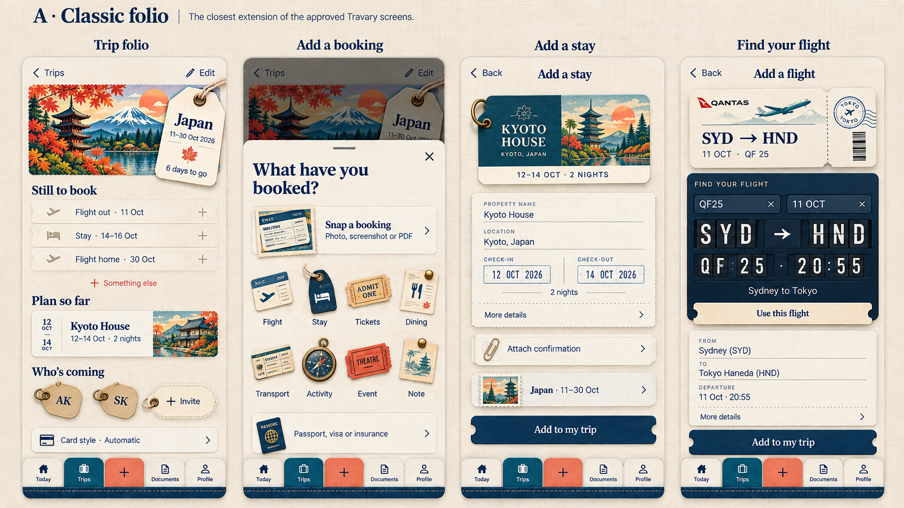

Travary screen directions
Compare the same four screens: trip folio, add sheet, stay form, and flight finder.
Closest to the approved screens: rich postcard art, warm paper, restrained shadows, and clear ticket forms.

Compare the same four screens: trip folio, add sheet, stay form, and flight finder.
Closest to the approved screens: rich postcard art, warm paper, restrained shadows, and clear ticket forms.
